User Guide for PostgreSQL#
Introduction#
Aurreum Data Protection Suite (ADPS) can back up and restore PostgreSQL databases. This guide introduces how to properly use ADPS to back up and restore PostgreSQL databases.
Features#
Feature |
Description |
|---|---|
Backup type |
Full backup: Back up all the databases on the instance. |
Backup schedule |
Immediate, one-time, hourly, daily, weekly, monthly |
Backup compression |
None, fast, tunable |
Backup target |
Standard storage pool, de-duplication storage pool, local storage pool, tape library pool, object storage service pool, LAN-Free pool |
Reconnection time |
The job continues after the abnormal reset occurs in the network within the set time. The default value is 10 minutes. |
Multiple channels |
The backup and restore with multiple channels are supported. |
Restore type |
Timepoint restore: Restore a database instance to a specified point-in-time state, including a backup state (shortest recovery time) and a specified point in time. |
Restore location |
Original path, specified path |
Restore target |
Overwrite the source database, create a new database |
Restore granularity |
Entire database (single, multiple), schema, table, instance, log |
Restore to different hosts |
Restoring to another host with different minor versions is supported. |
Storage pool replication |
PostgreSQL backup sets support storage pool replication. |
Restore from target pools |
Restoring backup sets from a target storage pool is supported. |
Pre/Post action |
The pre action is executed after the job starts and before the resource is backed up or restored. The post action is executed after the resource is backed up or restored. |
Speed limit |
The data transfer speed or disk read and write speed can be limited. |
D2C |
Data can be backed up to an object storage service directly. |
D2T |
Data can be backed up to a tape library directly. |
LAN-Free |
Backing up data to and restoring data from LAN-Free storage pools are supported. |
Modify a job’s backup source and target |
Modifying a job’s backup source and backup target is supported. |
IPv6 |
Data transfer and management over IPv6 network are supported. |
Install and Configure Agent#
Verify Compatibility#
ADPS supports the backup and restore of PostgreSQL single host and cluster. Before deploying the agent, check whether your operating system (OS) and database versions are supported. Please refer to Compatibility List for details.
Compatibility List#
Single Host#
Database Version |
Database Bits |
OS |
CPU Architecture |
OS Bits |
Note |
|---|---|---|---|---|---|
8.1 |
64 |
Red Hat 5 |
x86 |
64 |
|
8.4 |
64 |
Windows 2003 |
x86 |
64 |
|
8.4 |
64 |
Windows 2008 R2 |
x86 |
64 |
|
8.4 |
64 |
Red Hat 6 |
x86 |
64 |
|
8.4 |
64 |
CentOS 6.1 |
x86 |
64 |
|
8.4.11 |
64 |
CentOS 5.8 |
x86 |
64 |
|
9.1 |
64 |
Debian 7.8 |
x86 |
64 |
|
9.2 |
64 |
Windows 2003 |
x86 |
64 |
|
9.2 |
64 |
Windows 2008 R2 |
x86 |
64 |
|
9.2 |
64 |
Red Hat 7 |
x86 |
64 |
|
9.3 |
64 |
Windows 2008 R2 |
x86 |
64 |
|
9.4.23 |
64 |
Red Hat 6.5 |
x86 |
64 |
|
9.5.5 |
64 |
CentOS 6.7 |
x86 |
64 |
|
9.6.12 |
64 |
Red Hat 6.5 |
x86 |
64 |
|
9.6.12 |
64 |
Red Hat 7.2 |
x86 |
64 |
|
9.6.12 |
64 |
Red Hat 7.4 |
x86 |
64 |
|
9.6.24 |
64 |
Windows 2012 |
x86 |
64 |
|
10.19 |
64 |
Windows 2016 |
x86 |
64 |
|
10.6 |
64 |
CentOS 7.6 |
x86 |
64 |
|
10.8 |
64 |
Red Hat 6.5 |
x86 |
64 |
|
11.0 |
64 |
CentOS 7.0 |
x86 |
64 |
|
11.0 |
64 |
Windows 2012 |
x86 |
64 |
|
11.1 |
64 |
CentOS 7.2 |
x86 |
64 |
|
11.7 |
64 |
CentOS 7.6 |
x86 |
64 |
|
12.1 |
64 |
CentOS 7.6 |
x86 |
64 |
|
12.2 |
64 |
CentOS 7.6 |
x86 |
64 |
|
12.3 |
64 |
CentOS 7.6 |
x86 |
64 |
|
12.9 |
64 |
Windows 2016 |
x86 |
64 |
|
13.0 |
64 |
CentOS 7.5 |
x86 |
64 |
|
13.4 |
64 |
CentOS 7.5 |
x86 |
64 |
|
13.4 |
64 |
CentOS 8.0 |
x86 |
64 |
|
13.5 |
64 |
Windows 2016 |
x86 |
64 |
|
13.5 |
64 |
Windows 2019 |
x86 |
64 |
|
14.0 |
64 |
CentOS 7.5 |
x86 |
64 |
|
14.0 |
64 |
CentOS 8.0 |
x86 |
64 |
|
14.1 |
64 |
Windows 2016 |
x86 |
64 |
|
14.1 |
64 |
Windows 2019 |
x86 |
64 |
Cluster#
Database Version |
Database Bits |
OS |
CPU Architecture |
OS Bits |
Note |
|---|---|---|---|---|---|
9.4 |
64 |
CentOS 7.3 |
x86 |
64 |
One master one slave |
10.8 |
64 |
CentOS 7.3 |
x86 |
64 |
One master one slave |
13.4 |
64 |
CentOS 7.5 |
x86 |
64 |
One master one slave |
14.1 |
64 |
CentOS 7.5 |
x86 |
64 |
One master two slaves |
Download Agent Package#
Open a browser and log in to ADPS as the admin. Click Resource -> Install Agent icon and download the installation packages according to your needs.
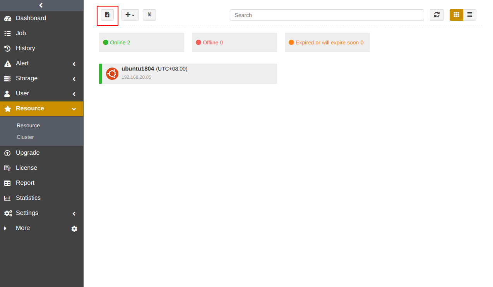
Install and Configure Agent on Windows#
Download Installation Package#
Select Windows as the system and choose a file. Click Download Windows agent.
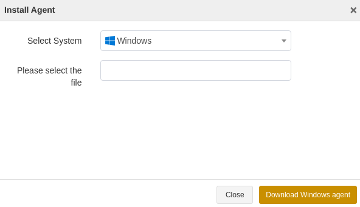
Install Agent on Windows#
Upload the agent package to the target host.
Double-click the package to install it according to the setup wizard and click Next.
This installation package selects the database resources, files, or applications installed on the host by default. Select the PostgreSQL component and click Next.
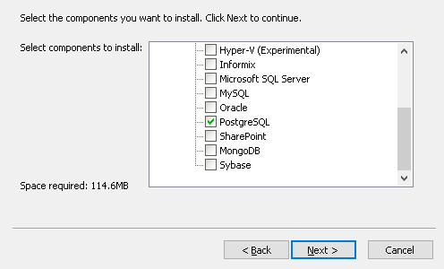
Set the Backup Server Host, Backup Server Port, and Access Key. Click Next.
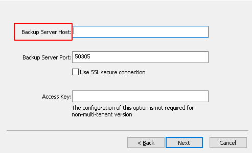
Select Destination Folder and click Next to install the software. Wait for the installation to complete.
Install and Configure Agent on Linux#
Select Linux as the system and PostgreSQL as the module. Copy an installation command.
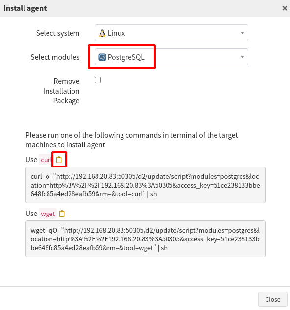
Paste the command on the command line and press Enter to execute the installation.
[root@13 ~]# curl -o- "http://192.168.20.85:50305/d2/update/script?modules=postgres&location=http%3A%2F%2F192.168.20.85%3A50305&access_key=2042288d749dba47e963d1ab09a6472b&rm=&tool=curl" | sh % Total % Received % Xferd Average Speed Time Time Time Current Dload Upload Total Spent Left Speed 100 7908 0 7908 0 0 1939k 0 --:--:-- --:--:-- --:--:-- 2574k % Total % Received % Xferd Average Speed Time Time Time Current Dload Upload Total Spent Left Speed 0 0 0 0 0 0 0 0 --:--:-- --:--:-- --:--:-- 0 100 58.7M 100 58.7M 0 0 72.3M 0 --:--:-- --:--:-- --:--:-- 100M % Total % Received % Xferd Average Speed Time Time Time Current Dload Upload Total Spent Left Speed 0 0 0 0 0 0 0 0 --:--:-- --:--:-- --:--:-- 0 100 6728k 100 6728k 0 0 44.5M 0 --:--:-- --:--:-- --:--:-- 44.5M % Total % Received % Xferd Average Speed Time Time Time Current Dload Upload Total Spent Left Speed 0 0 0 0 0 0 0 0 --:--:-- --:--:-- --:--:-- 0 100 3304k 100 3304k 0 0 31.7M 0 --:--:-- --:--:-- --:--:-- 31.7M
Check Successful Installation#
After the successful installation, log in to ADPS as the admin and see that the host is on the Resource list.
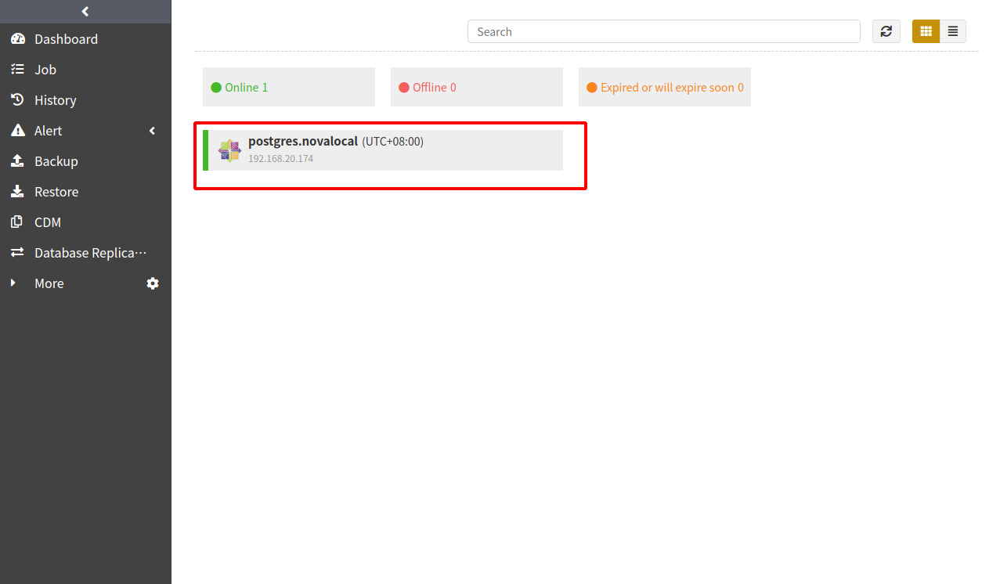
Before You Begin#
Check Database State#
Check the PostgreSQL service state of the agent. The PostgreSQL database service should be in the “Running” state for backup and restore.
-bash-4.2$ /usr/pgsql-13/bin/pg_ctl -D /var/lib/pgsql/13/data/ -l logfile status
pg_ctl: server is running (PID: 18378)
/usr/pgsql-13/bin/postgres "-D" "/var/lib/pgsql/13/data/"
Check Resource#
Log in to ADPS as the operator and go to Resource. You can see the activated and authorized resource with an “Online” state on the list. If the resource is not present, please check Activate License and Assign Authorization.
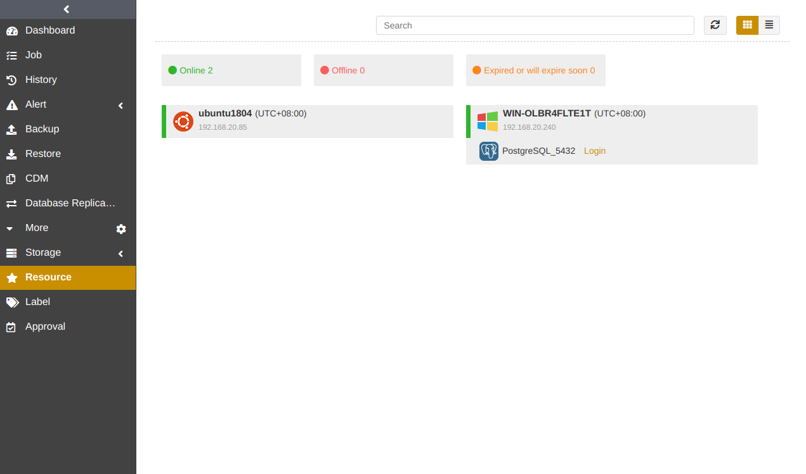
Check Storage Pool#
Log in to ADPS as the operator, go to Storage Pool, and verify a storage pool is available. If a storage pool is not present, please contact the admin to create one and assign permissions to the operator.

First Time Login#
Before creating the first PostgreSQL backup and restore, go to Resource and log in to PostgreSQL.
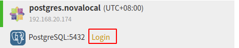
Create Backup Jobs#
This chapter introduces how to back up the PostgreSQL databases.
Prerequisites#
An agent has been installed. For installation, please refer to Install and Configure Agent.
You have activated the agent and assigned the authorization. For details, see Activate License and Assign Authorization.
Log in to ADPS as the operator.
Create Full Backup Jobs#
Click Backup. Select the PostgreSQL host and instance.
Select Full as the backup type.
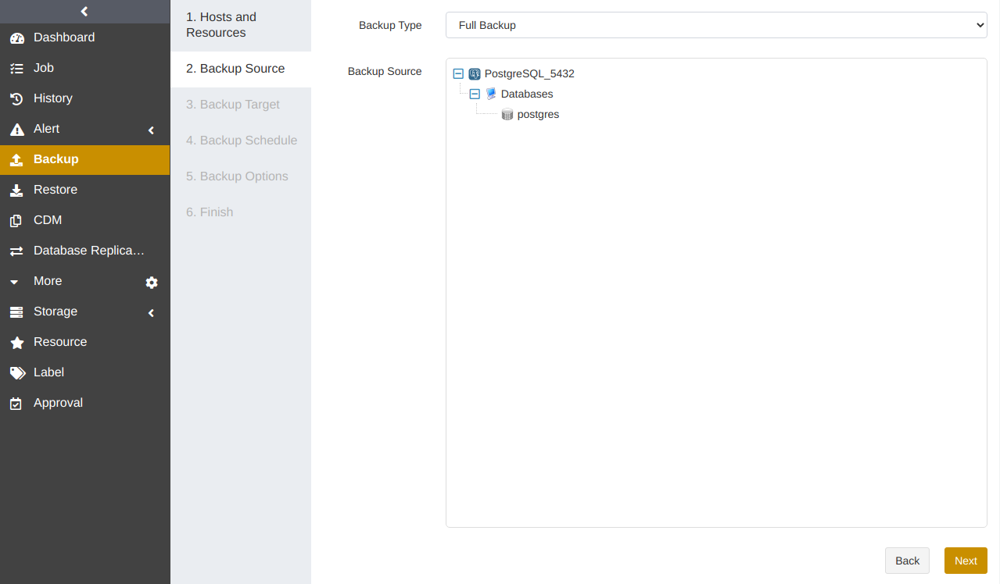
Select a Backup Target.
Go to Backup Schedule and set the execution time of the backup job. For details, please refer to Backup Schedule Operation.
Set Backup Options including common and advanced options. Enable the archive mode in PostgreSQL and set the archive log directory first if the database is not in archive mode.
Common options:
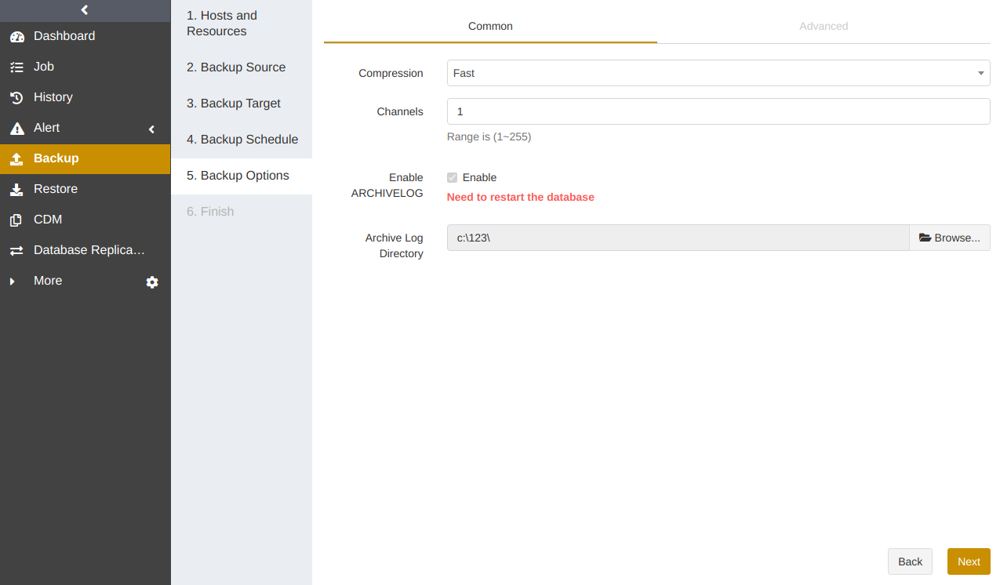
Compression: The Fast option is enabled by default.
None: During the backup, the data will not be compressed.
Tunable: You can customize the compression level. This option requires an activated feature of Advanced Compression.
Fast: During the backup, the data will be compressed by fast compression algorithms.
Channels: This option can improve backup efficiency. The default value is 1 and the range is 1 to 255. For details, please refer to Channel Number Configuration.
Reserve archive logs: Specify whether to delete the archive logs in the database after the backup. The Delete all archive logs option is enabled by default.
Delete all archive logs: Delete all the backed-up archive logs after the backup.
Reserve archive logs for N days/hours: Delete the backed-up archive logs that exist for longer than the specified N days/hours.
Do not delete archive logs: Do not delete the backed-up archive logs after the backup.
Advanced options:
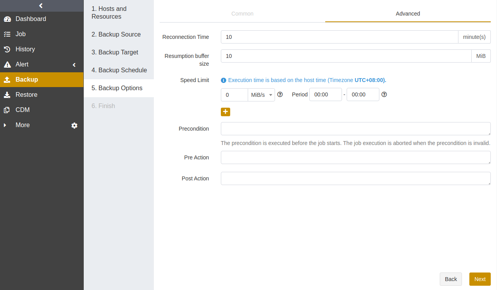
Reconnection Time: This option supports 1 to 60 minutes. The job continues after the abnormal reset occurs in the network within the set time. The unit is minute.
Speed Limit: You can set the limit for data transfer speed or disk read and write speed. The unit is MiB/s.
Precondition: The precondition is checked before the job starts. The job execution is aborted when the precondition is invalid.
Pre/Post action: The pre action is executed after the job starts and before the resource is backed up or restored. The post action is executed after the resource is backed up or restored.
Set a Job Name and check whether the job information is correct. Click Submit.
Create Incremental Backup Jobs#
An incremental backup job is created based on a full backup. It only backs up data that has changed since the last backup.
Creating a cumulative incremental backup is the same as creating a full backup. Select Incremental as the backup type.
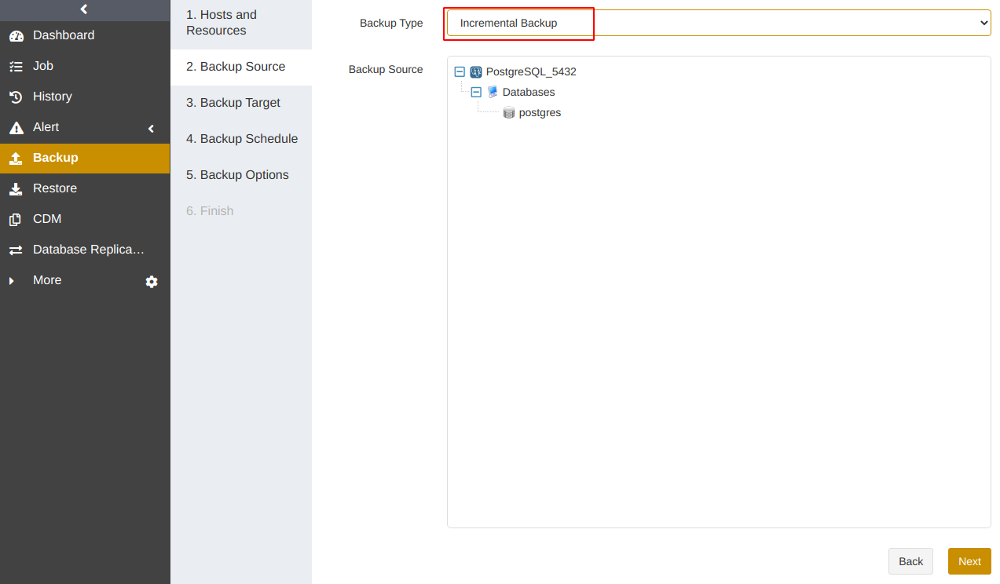
Note:
If the database has not been fully backed up, or has not been fully backed up after the restore, the first incremental backup will be performed as a full backup by default.
After you change the backup target of the incremental backup to a new storage pool, ensure that the new pool has a full backup by one of the following methods:
Create and perform a new full backup with the pool as the backup target.
Change the backup target of the base full backup to the pool and perform the modified job.
Create Log Backup Jobs#
Based on periodic full and incremental backups, you can add frequent log backups only to back up the archived logs. The appropriate log backup frequency depends on the balance between your tolerance for the risk of work loss and the number of log backups you can store, manage, and potentially restore. Performing a log backup every 15 to 30 minutes may be enough. But if your business requires minimizing the work-loss risk, consider running log backups more frequently. More frequent log backups can increase the frequency of log truncation, resulting in smaller log files.
Creating a log backup is similar to creating a full backup. Select Log as the backup type and choose databases.
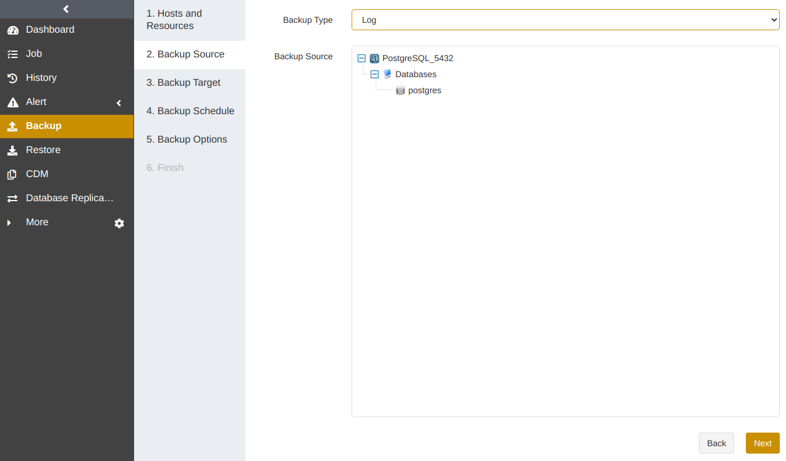
Note:
After you change the backup target of a log backup job to a new storage pool, ensure that the new pool has a full backup by one of the following methods:
Create and perform a new full backup with the pool as the backup target.
Change the backup target of the base full backup to the pool and perform the modified job.
Create Logical Backup Jobs#
PostgreSQL logical backup jobs can back up one or more databases, schemas, and tables.
Creating a logical backup is similar to creating a full backup. Select Logical as the backup type and choose databases, schemas, or tables that you want to back up.
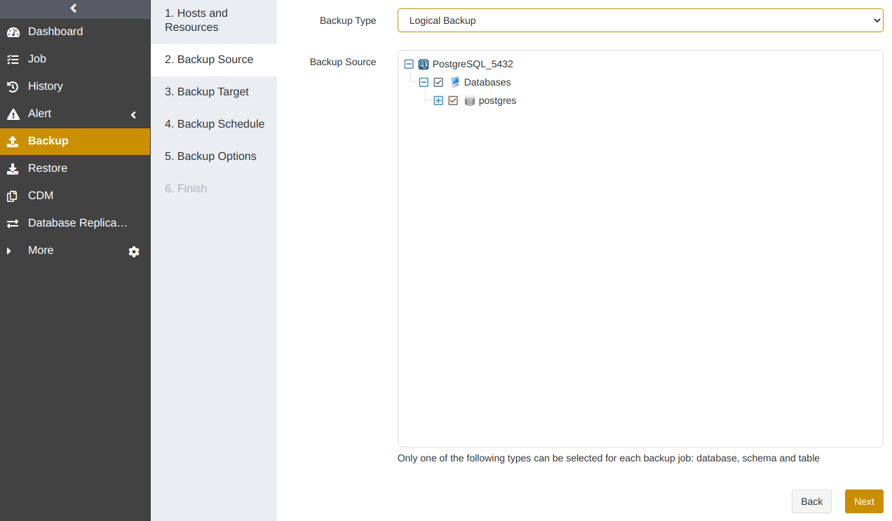
Note:
Currently, you can select only one of the following types for a logical backup job: database, schema, and table.
Create Restore Jobs#
This chapter introduces how to restore PostgreSQL databases. ADPS provides various restore types for different needs including timepoint restore, logical recovery, restore archived logs, and recovery testing.
Prerequisites#
A backup job has been completed. See Create Backup Jobs.
To restore to another host, install an agent on that host, activate its license and assign the authorization.
Create Timepoint Restore Jobs#
When a logical error or disaster occurs in a PostgreSQL database, you can restore the database to a specified point-in-time state using Timepoint Restore.
Select the PostgreSQL host and instance. Click Next.
Select Timepoint Restore. Then specify a restore point in time by selecting the Restore to point in time or Restore to backup state (shortest recovery time) option. Click Next.
Restore to point in time:
If you have performed log backup jobs, you can specify the restore point in time manually or by dragging the slider control.
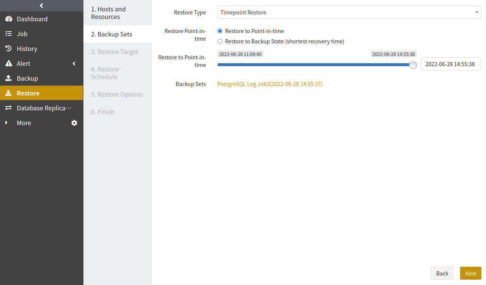
Restore to backup state (shortest recovery time):
When choosing Restore to backup state (shortest recovery time), you can select full backup sets and incremental backup sets for the restore job.
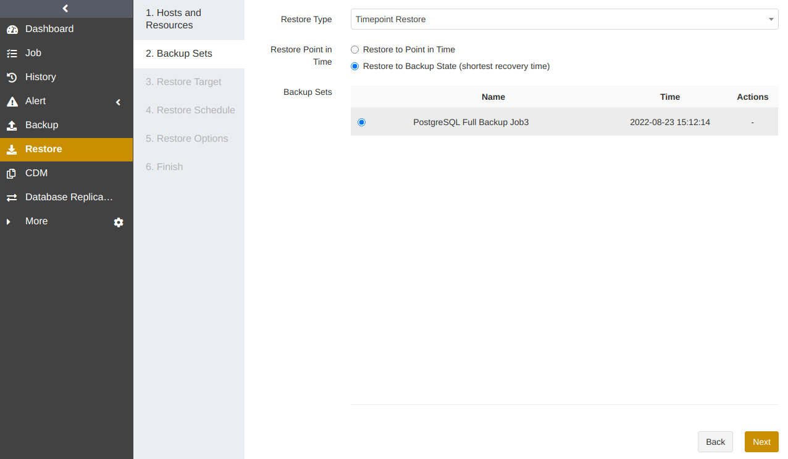
Select a Restore Target. The target can be the source host and a different host with or without activated resources. Click Next.
Select a Restore Schedule. It supports immediate and one-time restore schedules. Click Next.
Set Restore Options. You can set channels in the common options and set reconnection time, speed limit, precondition, pre/post action, as well as database configuration file in advanced options. Click Next.
Common options:
Open database after restore: This option is enabled by default. If it is disabled, the database will not be started after the successful restore.
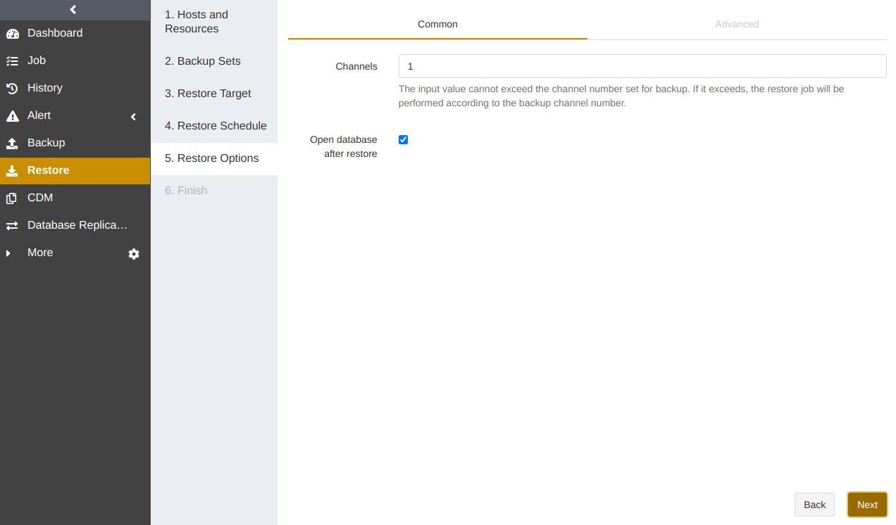
Advanced options:
Database configuration file: Click Browse… to select the path of the configuration file or enter the path manually. If you leave it blank, the default configuration file will be used.
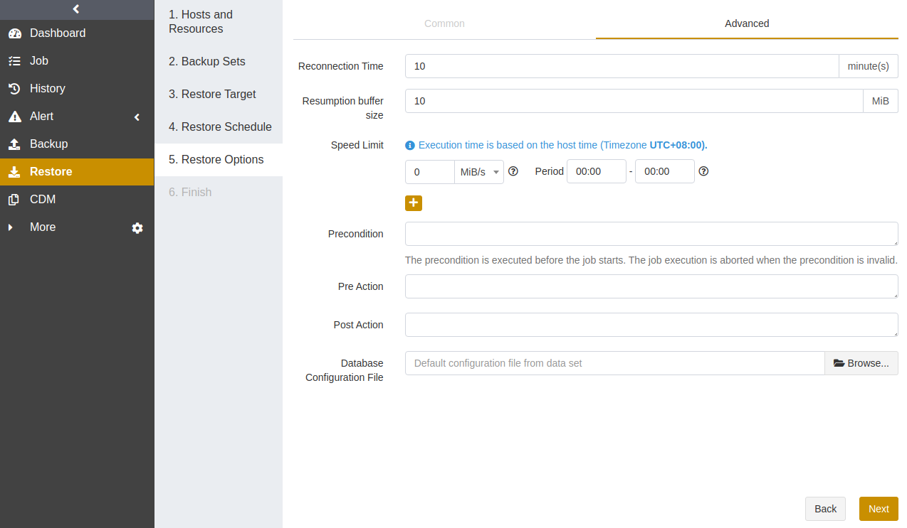
Confirm the job information and click Submit.
Create Logical Recovery Jobs#
When a database, schema, or table in PostgreSQL loses data, such as a data file is damaged or deleted by mistake, you can restore them to the latest state through Logical Recovery.
Select the PostgreSQL host and instance. Click Next.
Select Logical Recovery and a type (database, schema, or table). Then select a point in time of the backup set that you want to restore. Click Next.
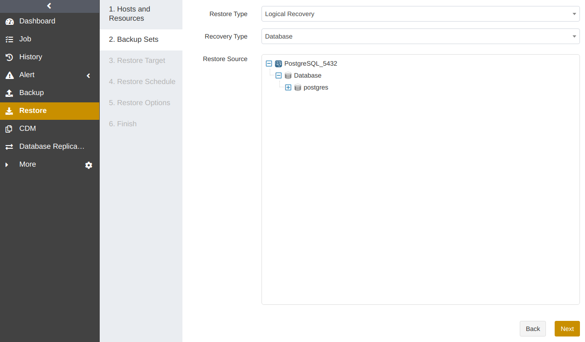
Select a Restore Target. You can restore the backup set to the source or a different host. Click Next.
Select a Restore Schedule. It supports immediate and one-time restore schedules.
Set Restore Options including reconnection time, speed limit, pre action, and post action. You can set these options according to your needs.
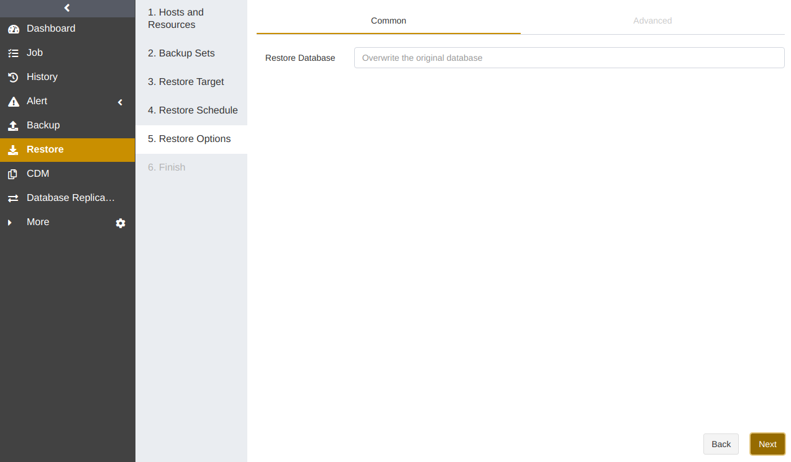
Restore Database: Set the method to restore the database. If you leave it blank, it will overwrite the original database by default. Or you can fill in the name of a new database and restore the backup set to it.
Confirm whether the information is correct and then submit the job.
Create Restore Archived Logs Jobs#
With the Restore Archived Logs function, you can restore only the archived logs to a specified directory of the agent with no need to recover the entire database. But the premise is that the database has one or more completed log backup jobs.
Select the PostgreSQL host and instance. Click Next.
Select Restore Archived Logs and a point in time. Click Next.
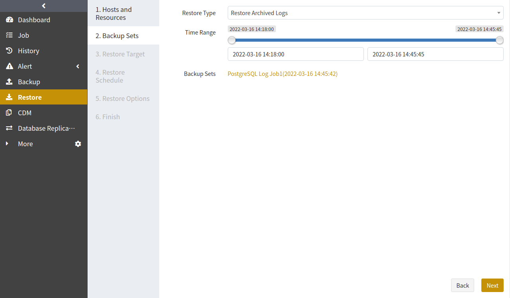
Select a Restore Target. The target can be a single host or cluster of PostgreSQL. When the restore target is a cluster, the restore job will run on all the nodes on the cluster. Click Next.
Select a Restore Schedule. It supports immediate and one-time schedule types. Click Next.
Set Restore Options. You can set archived logs destination in common options and reconnection time, speed limit, pre action, and post action in advanced options. Click Next.
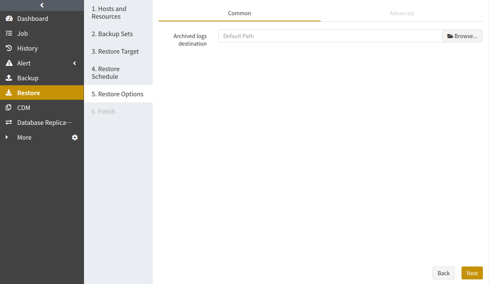
Confirm the job information and click Submit.
Create Recovery Testing Jobs#
Recovery testing jobs can restore the latest backup sets of PostgreSQL to another instance on the source or a different host hourly, daily, weekly, or monthly.
Note:
Recovery testing requires logical backup sets. Ensure that the database has logical backup sets before the recovery testing.
Select the PostgreSQL host and instance. Click Next.
Select Recovery Testing as the restore type and databases as the restore source. You can specify the restored database name by the Rename operation. Click Next.
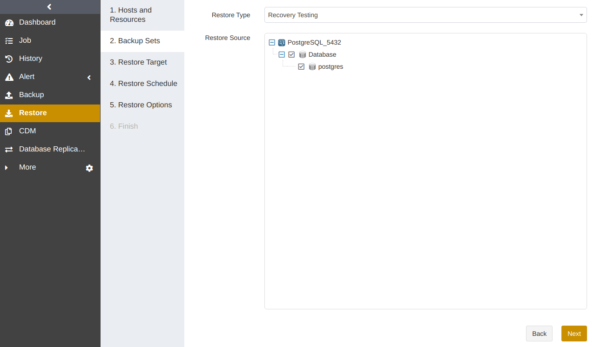
Select a Restore Target. The target can be another PostgreSQL instance on the source host or a different host. Click Next.
Select a Restore Schedule. It supports hourly, daily, weekly, and monthly schedule types. Click Next.
Set Restore Options according to your needs including reconnection time, speed limit, pre action, and post action. Click Next.
Confirm the job information and click Submit.
Wait for the job to be executed. The job will restore the latest backup sets of the source host.
Manage Jobs#
On the Job interface, you can view the backup and restore job information of all agents, start, modify, clone, and delete the jobs.
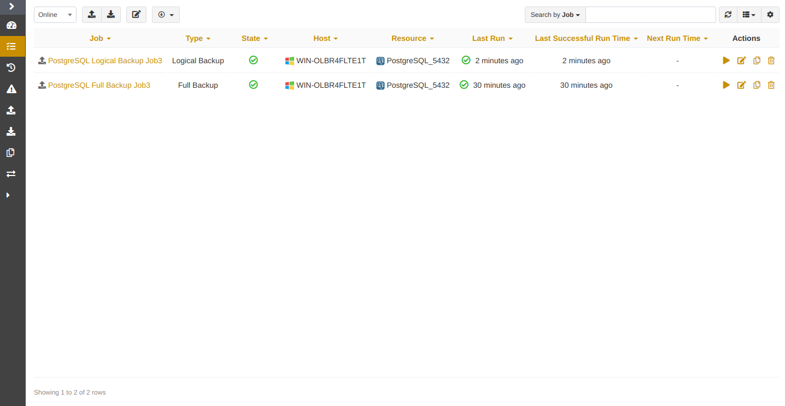
Start: Click
 to start the job immediately.
to start the job immediately.Modify: Click to modify the basic job information, backup/restore schedule, and backup/restore options.
Clone: Click
 to create multiple similar backup jobs.
to create multiple similar backup jobs.Delete: Click
 to access the confirmation window. Click OK to delete the job.
to access the confirmation window. Click OK to delete the job.
Backup Protection Strategy#
Backup Schedule Operation#
ADPS provides six types of backup schedules. The schedule type selected is only valid for the currently created job.

Immediate: The job immediately starts to run after it is submitted.
One Time: After the job is created, it will be in an idle state and start to run when the specified Start time is reached.
Hourly: After the job is created, the first run will be initiated at the specified Start Time. The next run will be executed after a specified number of hours/minutes within the time range according to the setting. If the unit is Hour, then you can set the value from 1 to 24. If you select the Minute as the unit, then you can set the value from 1 to 60.
Daily: After the job is created, the first run will be initiated at the specified Start Time. The next run will be executed after a specified number of days according to the setting. The value is an integer between 1 and 5.
Weekly: After the job is created, the first run will be initiated at the specified Start Time. The next run will be executed after a specified number of weeks according to the setting. You can specify which day of the week to run the job.
Monthly: The job runs on the specified days of some months at the specified time. For example, you can set the job to run on January 1 and June 1 at 20:00. Or you can set it to run on the first Monday of every month at 20:00.
Example: Run the job every two weeks on Friday at 18:00
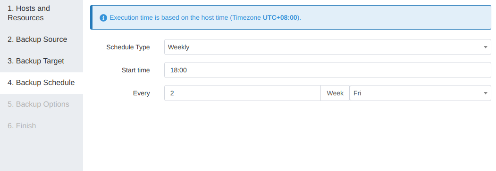
The execution time wull be:
If the current time is Friday at 17:00, the execution time will be Friday at 18:00 (the current day).
If the current time is Thursday at 17:00, the execution time will be Friday at 18:00 (the next day).
If the current time is Saturday at 17:00, the execution time will be next Friday at 18:00.
After the first run is completed, the job will start automatically at 18:00 on Friday every two weeks.
Backup Strategy Advice#
ADPS offers four PostgreSQL backup types: full backup, incremental backup, log backup, and logical backup. Full backup, incremental backup, and log backup can be used together. It is recommended to formulate the following backup strategy according to different situations such as network bandwidth, business data volume, security requirements, and the amount of lost data that you can tolerate.
When the application traffic is relatively small, run a Full Backup once a week to ensure that you have at least one recoverable point in time every week.
After that, you can run an Incremental Backup every day to reduce the backup time and ensure that you have at least one recoverable point in time every day.
If the database supports log backup, you can run a Log Backup hourly to ensure that the restore granularity RPO can reach the second level. For example, you can run a log backup every 2 hours.
Avoid using the following strategies:
Only perform full backups.
Perform a full backup followed by all incremental or log backups.
Channel Number Configuration#
Description of the channel number for backup jobs
PostgreSQL supports up to 255 channels. You can set the number of channels for backup and restore jobs according to your environment. A reasonable number can improve job performance. The number of channels is generally recommended to be the same as that of CPU cores. The efficiency improvement will not be obvious if the number of channels exceeds that of CPU cores.
Description of the channel number for restore jobs
You can set the Channels option on the restore page. If you use multiple channels to restore the backup set generated by one channel, the restore job will be automatically downgraded to a single-channel restore.
PostgreSQL Cluster#
ADPS supports PostgreSQL clusters. Before backup and restore, bind the PostgreSQL nodes into a cluster. Each node of the cluster is required to be deployed according to Install and Configure Agent as well as Activate License and Assign Authorization.
Note:
Log in to all the nodes before cluster binding.
Cluster Binding#
Go to Resource -> Cluster. Click the Cluster Binding icon.
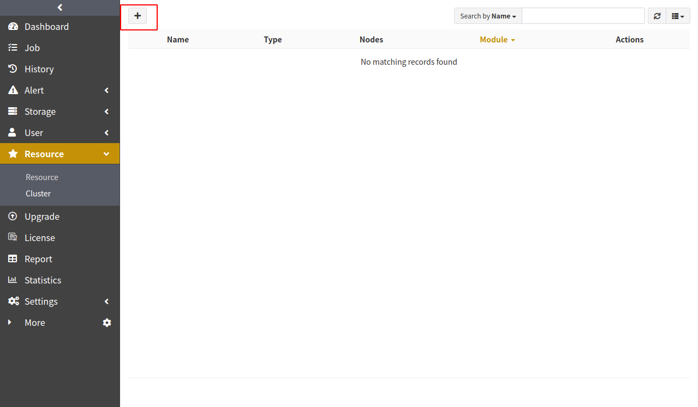
Customize the cluster name. Select the active node as the Primary Node, Master Slave Replication as the Type, and the inactive node as the Nodes. Click Submit.

Backup and Restore#
PostgreSQL cluster has the same backup and restore types as the single instance.
When a switchover occurs in the nodes of the PostgreSQL cluster, the new active node will automatically take over the backup job.
When creating a restore job, you can select a single instance or cluster as the restore target.